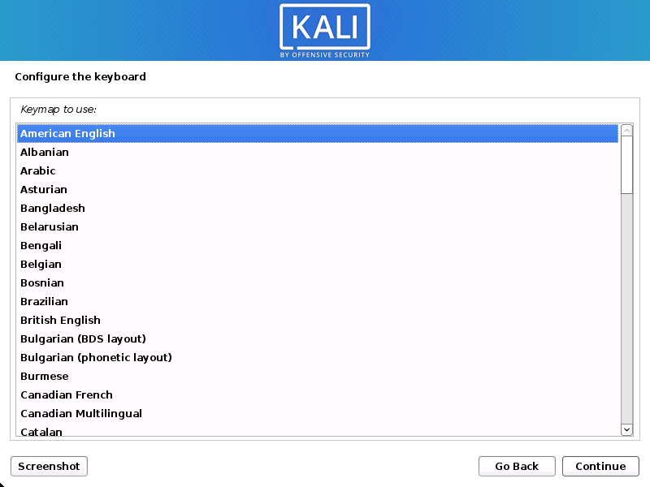
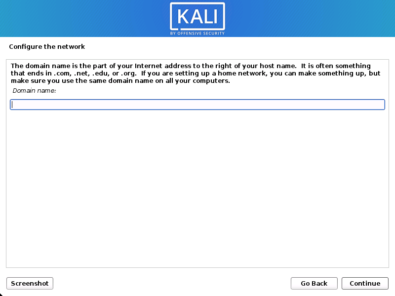
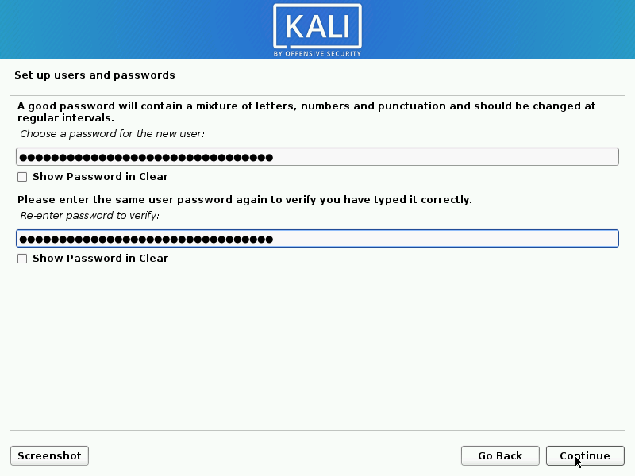

Panduan Lengkap Kali Linux: Pengenalan, Instalasi, dan Penggunaan Dasar
Apa itu Kali Linux?
Kali Linux adalah distribusi Linux berbasis Debian yang dirancang khusus untuk pengujian penetrasi dan audit keamanan. Sistem operasi ini dilengkapi dengan berbagai alat keamanan dan forensik digital yang membuatnya menjadi pilihan utama bagi para profesional keamanan dan penggemar keamanan siber.

Sejarah Singkat Kali Linux
Kali Linux pertama kali dirilis pada 13 Maret 2013 oleh Offensive Security, sebagai penerus distribusi BackTrack Linux. Nama "Kali" berasal dari dewi Hindu Kali, yang sering digambarkan dengan banyak tangan, mirip dengan banyaknya alat yang tersedia di Kali Linux.
Fitur Utama Kali Linux
- Lebih dari 600 alat pengujian penetrasi
- Gratis dan open source
- Dukungan perangkat keras yang luas
- Lingkungan pengembangan yang dapat disesuaikan
- Dukungan multi-bahasa
- Kompatibilitas dengan berbagai layanan nirkabel
- Alat forensik yang kuat
- Kemampuan untuk menyesuaikan kernel secara real-time
Kasus Penggunaan Kali Linux
| Kasus Penggunaan | Deskripsi |
|---|---|
| Pengujian Penetrasi | Menguji keamanan sistem dan jaringan untuk menemukan kerentanan |
| Forensik Digital | Menganalisis dan memulihkan data dari perangkat digital |
| Keamanan Nirkabel | Menguji keamanan jaringan Wi-Fi dan protokol nirkabel lainnya |
| Rekayasa Balik | Menganalisis perangkat lunak atau malware untuk memahami cara kerjanya |
Panduan Instalasi Kali Linux
Langkah 1: Unduh ISO Kali Linux
Kunjungi situs resmi Kali Linux di https://www.kali.org/downloads/ dan unduh file ISO yang sesuai dengan arsitektur komputer Anda (32-bit atau 64-bit).
Langkah 2: Buat Media Instalasi
Buat USB bootable menggunakan alat seperti Rufus (Windows) atau dd (Linux). Alternatifnya, Anda dapat membakar ISO ke DVD.
Langkah 3: Boot dari Media Instalasi
Restart komputer Anda dan boot dari USB atau DVD yang telah Anda buat. Anda mungkin perlu mengubah urutan boot di BIOS.
Langkah 4: Mulai Instalasi
Pilih "Graphical Install" dari menu boot Kali Linux dan ikuti petunjuk di layar.

Langkah 5: Konfigurasi Sistem
Pilih bahasa, lokasi, dan tata letak keyboard. Kemudian, atur nama host, domain, dan buat akun pengguna.
  Langkah 6: Partisi Disk
Pilih metode partisi yang sesuai dengan kebutuhan Anda. Untuk pemula, opsi "Guided - use entire disk" biasanya cukup.
Langkah 7: Instalasi Sistem
Tunggu hingga proses instalasi selesai. Ini mungkin memakan waktu beberapa menit hingga satu jam, tergantung pada kecepatan sistem Anda.
Langkah 8: Konfigurasi GRUB
Pilih untuk menginstal GRUB boot loader ke master boot record (MBR) ketika diminta.
Langkah 9: Selesai dan Restart
Setelah instalasi selesai, restart sistem Anda. Lepaskan media instalasi saat diminta.
Penggunaan Dasar Kali Linux
Perintah Dasar Terminal
ls - Menampilkan daftar file dan direktori
cd [direktori] - Pindah ke direktori tertentu
pwd - Menampilkan direktori kerja saat ini
mkdir [nama_direktori] - Membuat direktori baru
rm [file] - Menghapus file
rm -r [direktori] - Menghapus direktori dan isinya
cp [sumber] [tujuan] - Menyalin file atau direktori
mv [sumber] [tujuan] - Memindahkan atau mengganti nama file atau direktori
Alat Pengujian Penetrasi Populer
nmap - Scanner jaringan dan port
metasploit - Framework pengujian penetrasi
wireshark - Analisis paket jaringan
aircrack-ng - Suite untuk pengujian keamanan Wi-Fi
john - John the Ripper, alat untuk cracking password
hydra - Alat untuk brute-force login
Tips Keamanan
Peringatan: Kali Linux adalah alat yang kuat dan harus digunakan secara bertanggung jawab. Penggunaan yang tidak sah dapat melanggar hukum dan etika. Selalu dapatkan izin sebelum menguji sistem atau jaringan yang bukan milik Anda.
- Selalu perbarui Kali Linux Anda ke versi terbaru
- Gunakan kata sandi yang kuat untuk akun Anda
- Enkripsi disk Anda untuk melindungi data sensitif
- Gunakan VPN saat melakukan pengujian penetrasi jarak jauh
- Dokumentasikan semua aktivitas Anda untuk tujuan audit
Sumber Daya Tambahan
Kesimpulan
Kali Linux adalah alat yang sangat kuat untuk profesional keamanan dan penggemar keamanan siber. Dengan lebih dari 600 alat pengujian penetrasi, Kali Linux menyediakan platform yang komprehensif untuk menguji dan mengamankan sistem dan jaringan. Namun, penting untuk diingat bahwa dengan kekuatan besar datang tanggung jawab yang besar. Selalu gunakan Kali Linux secara etis dan sesuai dengan hukum yang berlaku.
Selamat mengeksplorasi dunia keamanan siber dengan Kali Linux!